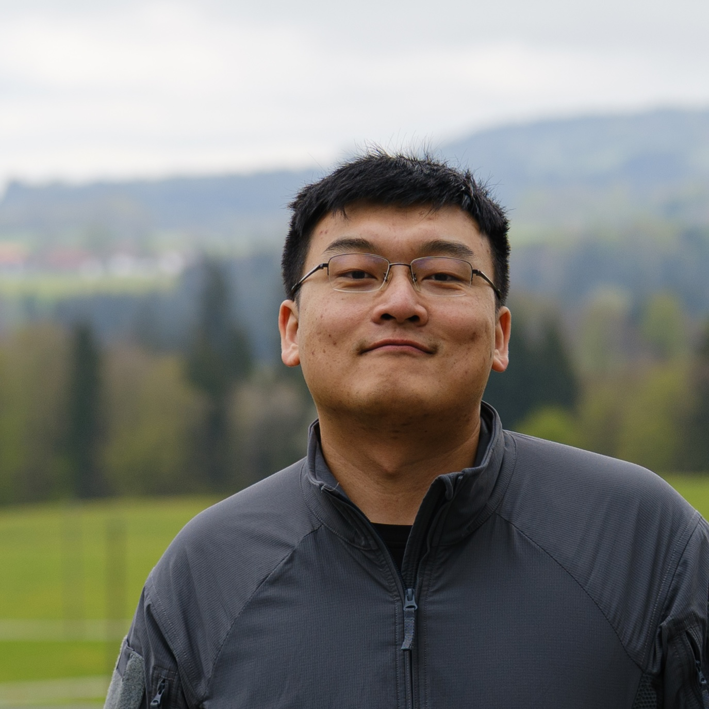

I am interested in making photography more accessible through AI: improving image quality while giving people intuitive control over the final photograph. My own photography helps shape the questions I explore.

Research
My research interests lie in computational photography and low-level computer vision. I am interested in using deep learning to improve how images are processed, from RAW sensor measurements to the final photograph, and in connecting image quality with the practical needs of photography.
In particular, I am interested in RAW and RGB image restoration and enhancement, learned image signal processing, and controllable photo editing. I aim to develop methods that produce natural-looking, high-quality images across different cameras and capture conditions, while giving people intuitive control over the result through tools such as natural-language instructions.
A benchmark comparing RAW restoration before the ISP with RGB restoration after it, across four smartphone device groups, two learned ISPs, and three degradation settings. The results highlight the importance of matching restoration training to the target imaging pipeline.
A vision-language model for controllable, photorealistic photo editing. PixTalk supports over 40 photography transformations and processes 12-megapixel images in under one second on consumer GPUs.
A report on restoring noisy and blurred RAW images and performing 2× super-resolution on RAW Bayer data. The challenge attracted 230 registered participants, with 45 submitting results.